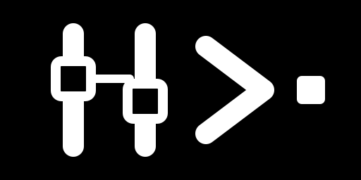

Flows
Sollen Produktpfade, Entscheidungen, Befehle, Transformationen und Ergebnisse darstellen.

RailixSoftware ohne Plattformfalle
Railix baut auf eine Zukunft hin, in der Teams Softwareprodukte aus einem visuellen ausführbaren Modell erstellen, prüfen, kompilieren, bereitstellen und betreiben können. Ziel ist eine Entwicklungsumgebung, in der Modelländerungen im Hintergrund kompilieren und Software sich wie eine Live-Entwicklungsumgebung anfühlt.
Ein gemeinsames Modell
Das Modell soll Entwicklern Kontrolle, Produktteams Klarheit, Support Betriebskontext, Auditoren Nachvollziehbarkeit und KI-Systemen eine strukturierte Quelle der Wahrheit geben.
Flows und Steps sollen Produktverhalten direkt beschreiben, während Beispiele erwartete Ergebnisse nachweisen, bevor ein kompiliertes Artefakt entsteht.
Vom Modell zum Artefakt
Sollen Produktpfade, Entscheidungen, Befehle, Transformationen und Ergebnisse darstellen.
Erfassen konkrete Verhaltenseinheiten, die geprüft und kompiliert werden sollen.
Sollen als lebende Spezifikationen und als Freigabe für den Build dienen.
Das geprüfte Modell soll zu einer portablen Anwendung für die gewünschte Laufzeitumgebung werden.
Technische Form
Sollen Payloads, Befehle, Umgebungswerte und externe Events als Einstiegspunkte in einen Flow definieren.
Steps sollen Verzweigungen, Feldtransformation, Validierung, Befehlsausführung und Endzustände abdecken.
Sollen erwartete Ein- und Ausgaben lokal festhalten, damit das Modell geprüft werden kann, bevor ein Artefakt entsteht.
Die geplante Grenze ist ein deploybares Anwendungspaket, nicht der Editor als Laufzeitumgebung.